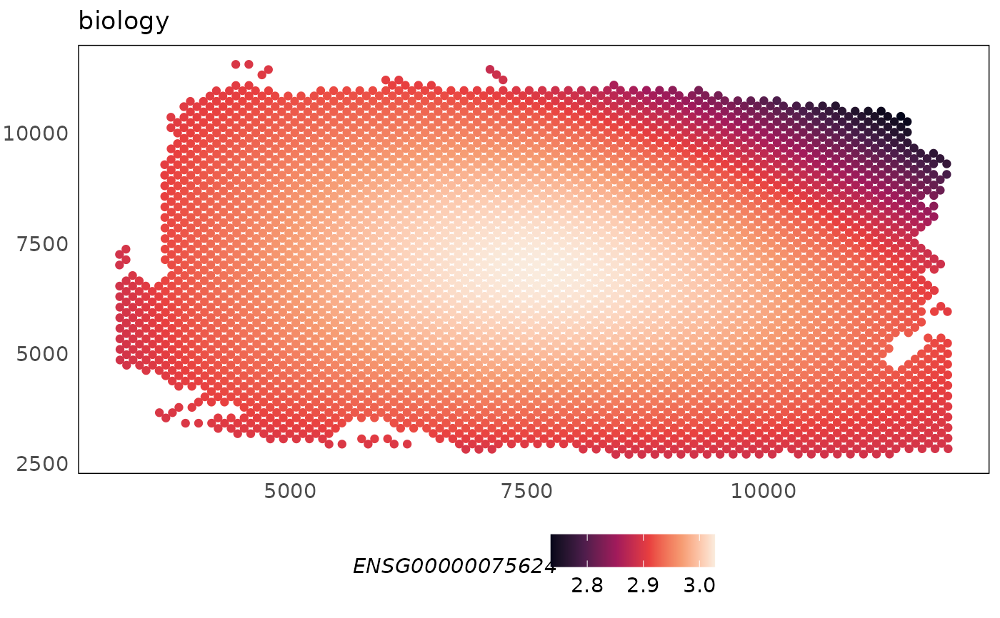
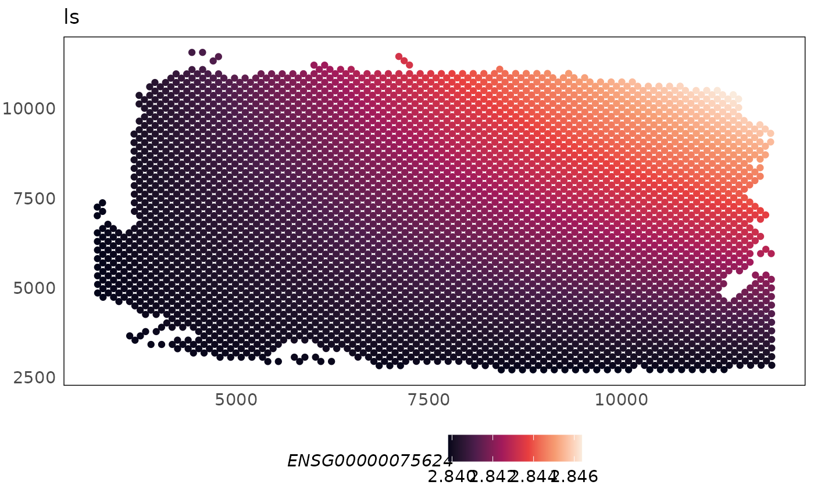

This function can be used to spatially visualise the library size, biology or batch specific effect modelled for each gene.
Usage
plotCovariate(spe, covariate = c("biology", "ls", "batch"), ...)Arguments
- spe
a SpatialExperiment object.
- covariate
a character, specifying the type of covariate to be plot: "biology" (default), "ls" to plot the library size effect, and "batch" to plot the batch-specific effect.
- ...
additional parameters to be passed to the plotSpatial function.
Examples
library(SpatialExperiment)
library(ggplot2)
data(HumanDLPFC)
# \donttest{
HumanDLPFC = SpaNorm(HumanDLPFC, sample.p = 0.05, df.tps = 2, tol = 1e-2)
#> (1/2) Fitting SpaNorm model
#> 201 cells/spots sampled to fit model
#> iter: 1, estimating gene-wise dispersion
#> iter: 1, log-likelihood: -1178470.898086
#> iter: 1, fitting NB model
#> iter: 1, iter: 1, log-likelihood: -1178470.898086
#> iter: 1, iter: 2, log-likelihood: -836897.850282
#> iter: 1, iter: 3, log-likelihood: -745318.187008
#> iter: 1, iter: 4, log-likelihood: -729057.902408
#> iter: 1, iter: 5, log-likelihood: -726598.989073
#> iter: 1, iter: 6, log-likelihood: -726202.741506
#> iter: 1, iter: 7, log-likelihood: -726120.865912
#> iter: 1, iter: 8, log-likelihood: -726097.753771 (converged)
#> iter: 2, estimating gene-wise dispersion
#> iter: 2, log-likelihood: -725767.348750
#> iter: 2, fitting NB model
#> iter: 2, iter: 1, log-likelihood: -725767.348750
#> iter: 2, iter: 2, log-likelihood: -725634.183293
#> iter: 2, iter: 3, log-likelihood: -725627.227675 (converged)
#> iter: 3, log-likelihood: -725627.227675 (converged)
#> (2/2) Normalising data
# plot spatial region annotations
p1 <- plotCovariate(HumanDLPFC, covariate = "biology", colour = ENSG00000075624) +
scale_colour_viridis_c(option = "F")
p1

p2 <- plotCovariate(HumanDLPFC, covariate = "ls", colour = ENSG00000075624) +
scale_colour_viridis_c(option = "F")
p2

# }